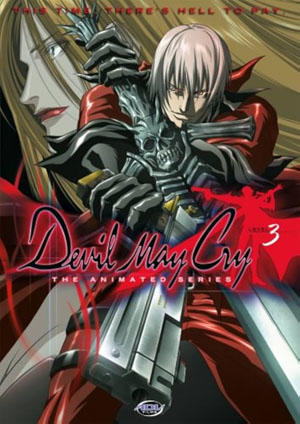
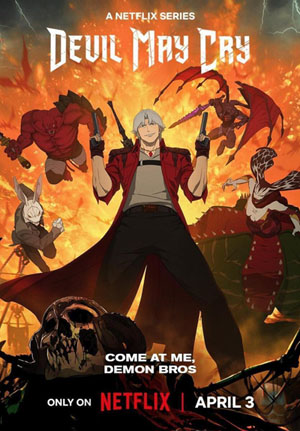

En esencia, Devil May Cry es una aclamada serie de videojuegos de acción hack-and-slash desarrollada por Capcom. Conocida por su combate estilizado y frenético, su estética gótica, personajes carismáticos y una narrativa que mezcla elementos de fantasía oscura con acción desenfrenada, la franquicia se ha convertido en un referente del género.
Combate Centrado en Combos: La piedra angular de Devil May Cry es su sistema de combate profundo y gratificante. Los jugadores encarnan a poderosos cazadores de demonios capaces de realizar una vasta gama de ataques cuerpo a cuerpo y a distancia, enlazándolos en combos fluidos y espectaculares.
Variedad de Armas: A lo largo de los juegos, los personajes adquieren una gran variedad de armas cuerpo a cuerpo (espadas, guadañas, guanteletes, etc.) y armas de fuego (pistolas, escopetas, lanzacohetes, etc.). Cada arma tiene sus propios movimientos, combos y estrategias asociadas.
Estilos de Combate (en juegos posteriores): Algunos títulos, como Devil May Cry 3 y 4, introdujeron la mecánica de "estilos" de combate, permitiendo a los jugadores cambiar entre diferentes enfoques en tiempo real (por ejemplo, Trickster para evasión rápida, Swordmaster para ataques cuerpo a cuerpo potenciados, Gunslinger para maestría con armas de fuego, Royal Guard para defensa y contraataque).
Devil Trigger: Una habilidad distintiva de los personajes principales es el "Devil Trigger", una transformación temporal en una forma demoníaca más poderosa. En este estado, los personajes suelen ser más fuertes, rápidos y pueden realizar ataques especiales.
Sistema de Rango de Estilo: Un elemento crucial es el sistema de "rango de estilo" que evalúa la habilidad y espectacularidad del jugador en combate. Realizar combos variados, evitar daño y usar diferentes técnicas aumenta el rango (de "Dull" a "Stylish" y más allá), lo que a menudo recompensa con puntos adicionales y una mayor satisfacción.
Exploración y Puzzles: Aunque el combate es central, los juegos también incorporan elementos de exploración en entornos góticos y detallados, así como algunos puzzles sencillos que requieren el uso de habilidades o la búsqueda de objetos.
Dante, el Cazador de Demonios: El protagonista principal de la mayoría de los juegos es Dante, un mercenario mitad humano y mitad demonio, hijo del legendario demonio Sparda. Dante dirige su propia agencia de cazadores de demonios llamada "Devil May Cry". Es conocido por su actitud sarcástica, su valentía, su amor por la pizza y su increíble poder.
Un Mundo Gótico y Sobrenatural: Los juegos se desarrollan en un mundo donde la frontera entre el reino humano y el infierno es tenue. Los escenarios suelen ser castillos antiguos, ciudades en ruinas, laboratorios oscuros y otros lugares con una atmósfera gótica y opresiva.
Lucha Contra Invasiones Demoníacas: La trama generalmente gira en torno a Dante y sus aliados enfrentándose a poderosos demonios que intentan invadir o corromper el mundo humano. A menudo hay conspiraciones complejas, traiciones y revelaciones sobre el pasado de los personajes.
Temas de Familia, Poder y Redención: La serie explora temas recurrentes como la relación entre hermanos (Dante y su gemelo Vergil), la búsqueda de poder, la lucha contra el destino y la posibilidad de redención incluso para los seres demoníacos.
La serie de anime de Devil May Cry del 2007, producida por Madhouse, se sitúa cronológicamente entre los eventos del primer y segundo videojuego.
A diferencia de las entregas principales de la saga, esta serie presenta en su mayoría historias autoconclusivas en cada uno de sus 12 episodios, aunque se va desarrollando una trama general a lo largo de la temporada.
la serie de Devil May Cry toma elementos de la franquicia de videojuegos pero presenta una historia y caracterizaciones que se alejan bastante del material original.
Se exploran temas como la naturaleza del bien y el mal, la perspectiva de los demonios y los conflictos entre humanos y demonios, todo ello con una buena dosis de acción y elementos sobrenaturales.
